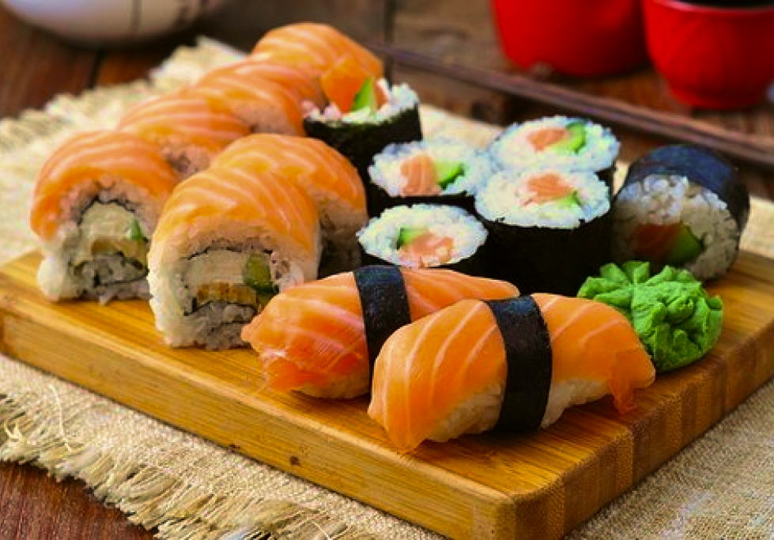
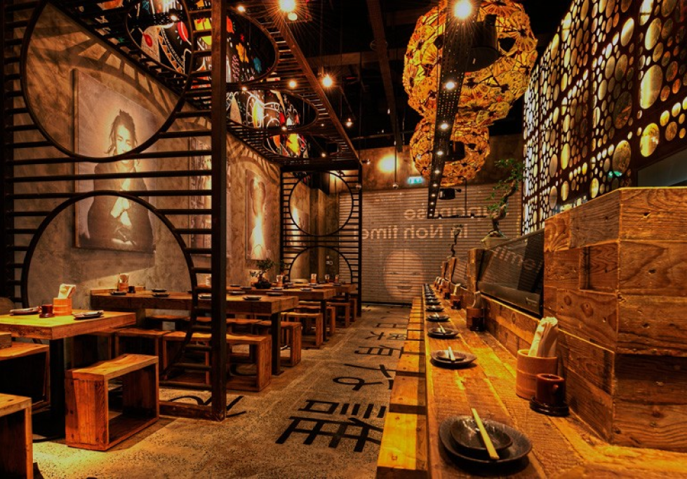

Our Restaurant
FUJI is a charming Japanese restaurant that offers an authentic dining experience with a modern twist. FUJI takes its name from the iconic Mount Fuji, capturing the essence of Japan's rich culinary heritage.

Cuisine
One can expect to find a wide array of dishes representing various regional specialties of Japan. From the freshest sushi and sashimi to mouthwatering grilled dishes and flavorful noodle soups, the menu caters to a range of preferences and dietary needs.

Dining Area
The interior is thoughtfully designed to create a serene and inviting atmosphere that reflects the essence of Japanese culture. As you step into the restaurant, you are greeted by a harmonious blend of traditional and modern elements that create a unique ambiance.
Customer Service
Customer service is at the forefront of the dining experience, reflecting the Japanese culture of hospitality and attention to detail. The staff at FUJI is dedicated to ensuring that every guest feels welcomed, valued, and well taken care of throughout their visit.
Our Menu
Our Branches
NEW YORK, USA
PARIS, France
SENTOSA, Singapore
MANILA, Philippines